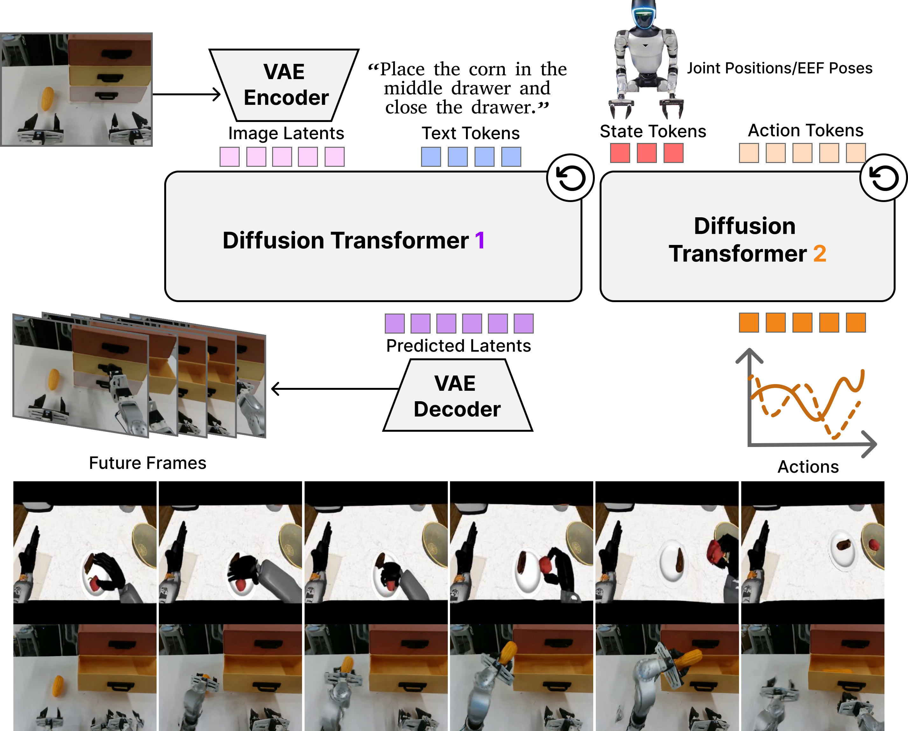
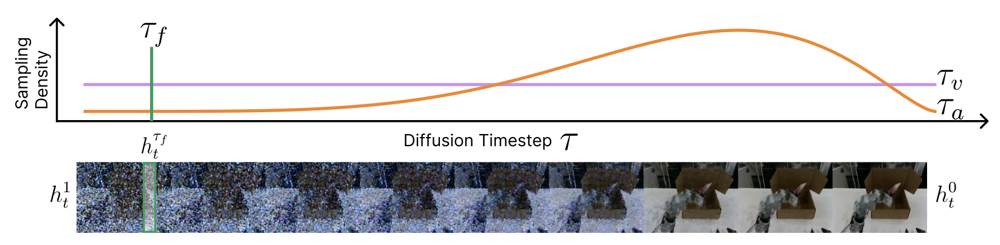
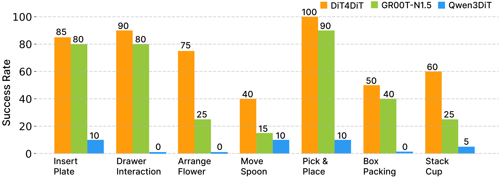
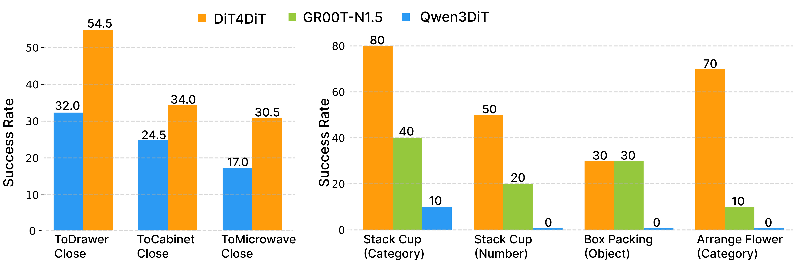
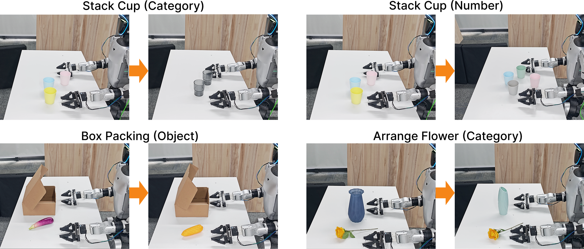
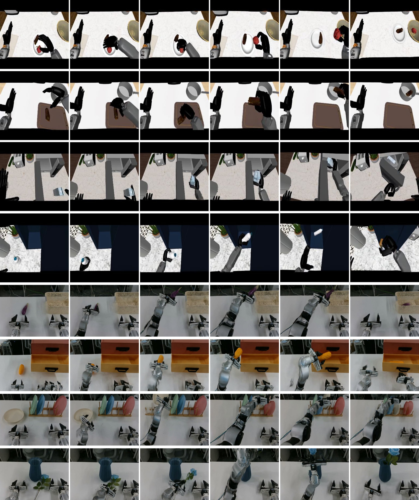

DiT4DiT
Jointly Modeling Video Dynamics and Actions for Generalizable Robot Control
Box Packing (1x speed)
Drawer Interaction (1x speed)
Stack up the Cups (1x speed)
Insert Plate into the Rack (1x speed)
Pick and Place (1x speed)
Move the Spoon (1x speed)
Arrange the Flower (1x speed)
Highlights
- A cascaded video-action architecture. An end-to-end framework that unifies video and action Diffusion Transformers, leveraging generative video dynamics as a rich physical proxy to replace static vision-language priors.
- An joint dual flow-matching objective. A joint dual flow-matching objective that decouples diffusion timesteps, enabling the extraction of highly structured, physics-aware features in a single deterministic step for efficient closed-loop control.
- High data efficiency and zero-shot generalization. Achieving state-of-the-art performance across simulation and physical Unitree G1 deployments using a single ego-camera and merely 15% of the pre-training data of comparable baselines, with robust adaptation to unseen objects.
Method

DiT4DiT is an end-to-end Video-Action Model with a cascaded dual-DiT architecture. (a) The Video DiT (initialized from Cosmos-Predict2.5-2B) takes the current observation frames and a language goal, encodes them via a causal video VAE into latent space, and models future visual dynamics via flow matching. A forward hook mechanism intercepts intermediate hidden activations at a fixed flow timestep from a specific transformer layer, converting the generative process into rich, physics-aware visual tokens — without requiring full video reconstruction. (b) The Action DiT takes the extracted visual tokens via cross-attention, along with proprioceptive state embeddings and noisy action trajectories, and predicts a velocity field to generate precise robot action trajectories. (c) A dual flow-matching objective with a tri-timestep scheme jointly optimizes both branches end-to-end, allowing the video branch to learn the full generative trajectory while the action branch performs efficient generative inverse dynamics.

Asymmetric tri-timestep design. We decouple the diffusion timesteps to optimize joint video-action generation. The video module uses uniform sampling $\tau_v$ to capture the full denoising trajectory, while the action module uses Beta sampling $\tau_a$ to focus on critical control phases. Meanwhile, stable visual conditions are extracted at a fixed deterministic timestep $\tau_f$ from the evolving hidden states $h_t^1 \rightarrow h_t^0$.
Simulation Results
LIBERO Benchmark
DiT4DiT achieves 98.6% average success rate across four LIBERO suites, surpassing all baselines including π0.5 (96.9%), CogVLA (97.4%), and OpenVLA-OFT (97.1%). Particularly strong on LIBERO-Long (extended horizon): 97.6%.
RoboCasa-GR1 Benchmark
DiT4DiT achieves 50.8% average success rate across 24 tasks, surpassing GR00T-N1.5 (41.8%) by 9.0 points and GR00T-N1.6 (40.8%) by 10.0 points. Outperforms Qwen3DiT (36.2%) by 14.6% absolute, confirming that video-generative priors are vastly superior to static VLM priors.
Real-World Results
We evaluate DiT4DiT on seven household tasks with the Unitree G1 humanoid robot: pick-and-place, arrange flower, stack cups, insert plate, box packaging, move spoon, and drawer interaction. DiT4DiT comprehensively outperforms both GR00T-N1.5 (pre-trained with more data) and Qwen3DiT across all tasks.

Generalization
DiT4DiT demonstrates strong zero-shot generalization under severe distribution shifts in both simulation and real-world settings.

Simulation Generalization
In RoboCasa object-substitution tests, DiT4DiT achieves 54.5% on unseen objects vs. 32.0% for Qwen3DiT.
Real-World Generalization
Tested on category changes (unseen cups/vases), object substitution (corn instead of eggplant), and quantity variation (4 cups instead of 3). DiT4DiT achieves 70% on Arrange Flower (Category) vs. 0% for Qwen3DiT and 10% for GR00T-N1.5.

Generated Video Plans
DiT4DiT can optionally generate full video plans showing predicted future dynamics. The video branch produces realistic visual plans that demonstrate the model's understanding of physical dynamics and task-relevant behaviors.

Efficiency
| Model | Trainable Params | Deployment Freq. |
|---|---|---|
| GR00T-N1.5 | 2.7B | 13 Hz |
| Qwen3DiT | 2.3B | 9 Hz |
| DiT4DiT (Ours) | 2.2B | 6 Hz |
DiT4DiT is the most parameter-efficient model. While the 6 Hz deployment frequency is lower than alternatives, it is sufficient for real-time closed-loop control, and the superior action quality more than compensates for the lower frequency.
BibTeX
@article{ma2026dit4dit,
title={DiT4DiT: Jointly Modeling Video Dynamics and Actions for Generalizable Robot Control},
author={Ma, Teli and Zheng, Jia and Wang, Zifan and Jiang, Chunli and Cui, Andy and Liang, Junwei and Yang, Shuo},
journal={arXiv preprint arXiv:2603.10448},
year={2026}
}